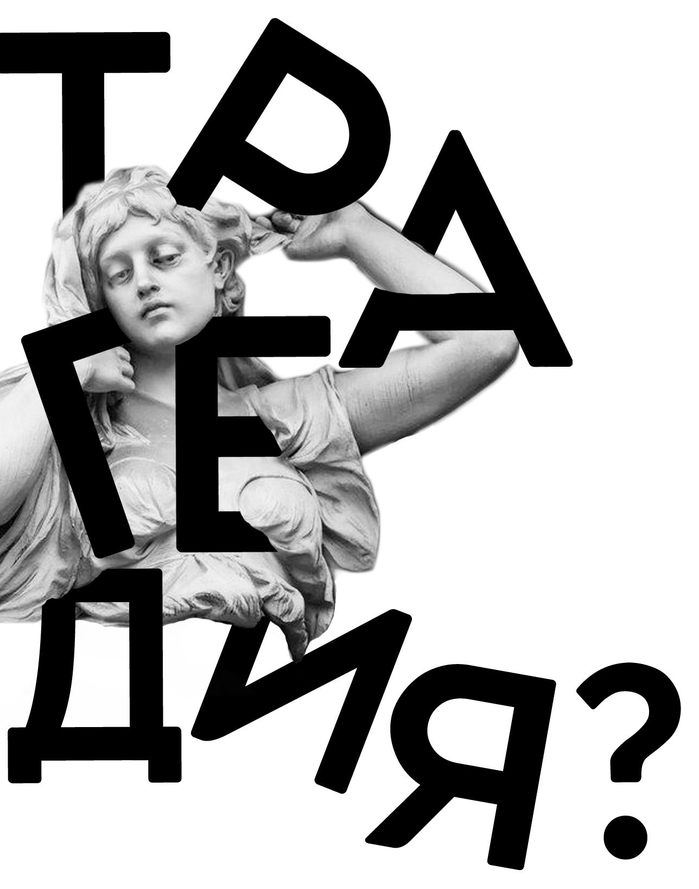
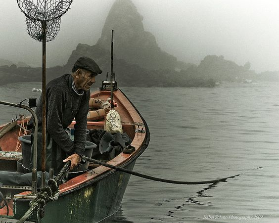
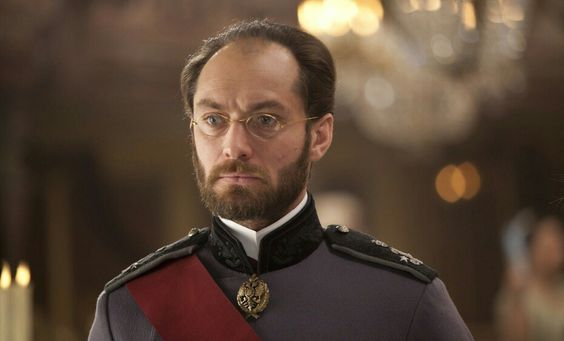
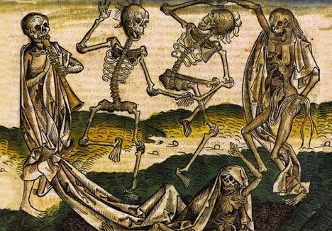
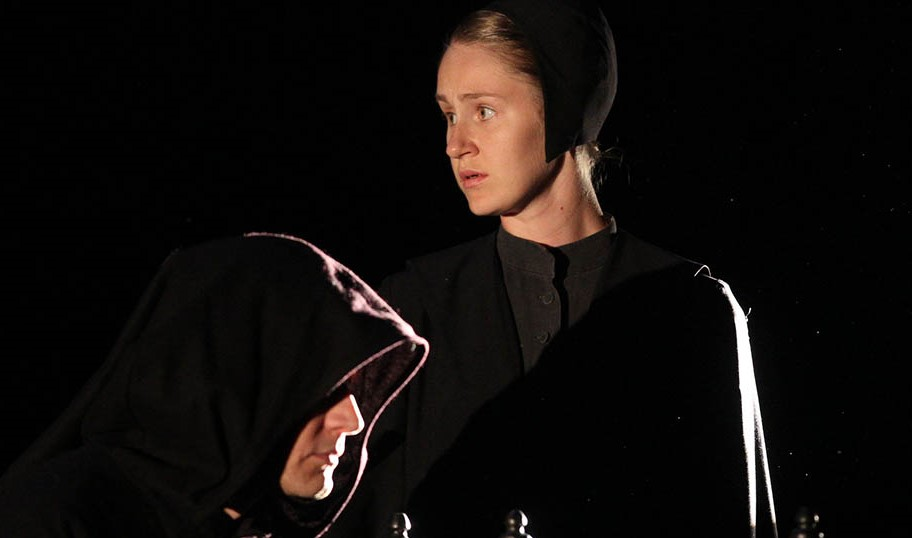

ТЕАТР ТРАНСФОРМ
СЫГРАЙТЕ В СПЕКТАКЛЕ, И ТЕАТР ИЗМЕНИТ ВАШУ ЖИЗНЬ
СТРАХ?
ЧЕРНОЕ МОРЕ
роль Героя
Живя у старика-метеоролога Юнге, писатель нашел в одной из книг его библиотеки письмо, в котором была интересная история. Он поведал старику об этом письме и между мужчинами завязался разговор. Юнге рассказывал Гарту о ветрах на Черном море, ураганах.
РЕВНОСТЬ?
АННА КАРЕНИНА
роль Алексея Каренина
Попытки Каренина остановить неудержимое стремление жены к Вронскому, попытки самой Анны сдержать себя оказываются безуспешны. Через год после первой встречи она становится любовницей Вронского — понимая, что теперь они связаны навсегда, как преступники.
ПОТЕРЯ?
ЧУМА
роль доктора Риэ
Чума приходит в этот город, лишённый растительности и не знающий пения птиц, неожиданно. Все начинается с того, что на улицах и в домах появляются дохлые крысы. Вскоре уже ежедневно их собирают по всему городу тысячами, В первый же день нашествия этих мрачных предвестников беды доктор Риэ отправляет свою жену в горный санаторий.
ДЕПРЕССИЯ?
ПРЕСЛЕДОВАТЕЛЬ
роль Героя
Спектакль-переживание о таланте и предназначении по мотивам рассказа Хулио Кортасара. Наступает момент, когда задаешься вопросом: на своем ли я месте? Имеет ли смысл происходящее и то, что я делаю, и стоит ли продолжать? Главный герой находится в таком моменте — в точке слома. «Преследователь» — спектакль-переживание и рассказ о том, как он справится с этим.